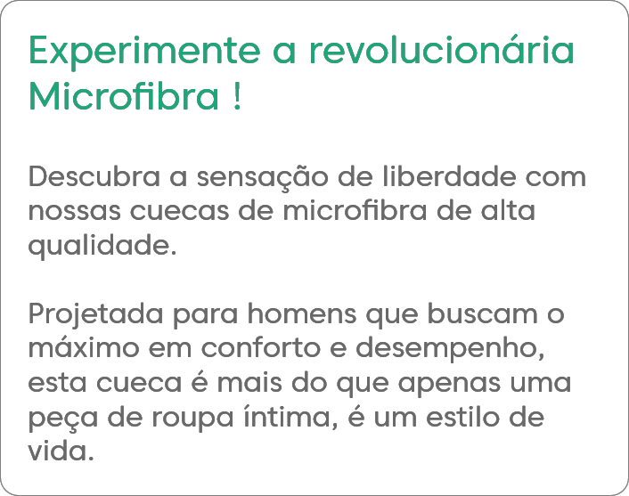
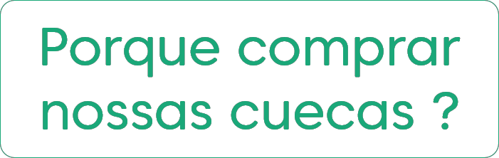
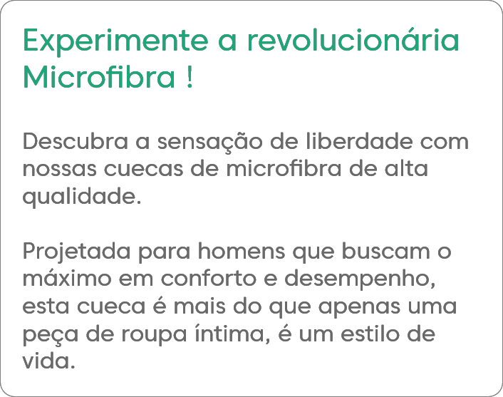
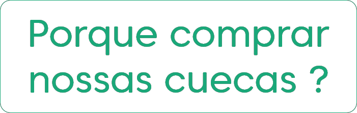

Feita com tecido ultra macio, esta cueca abraça seu corpo, proporcionando uma sensação
suave e confortável durante
todo o dia.
Conforto incomparável
Adeus ao suor e ao desconforto! A microfibra permite que sua pele respire, mantendo-o fresco e seco em todas as situações.
Respirabilidade superior
Ajuste
Perfeito
Adequada para qualquer tipo de corpo, nossa cueca de microfibra se adapta como uma segunda pele, proporcionando liberdade de movimento e suporte onde você mais precisa.
Vantagens na Lavagem
Os tecidos microfibra são tão versáteis que também podem facilitar a sua vida na hora da lavanderia. Eles costumam secar rápido e não amassarem. Além disso, podem dispensar o uso de amaciantes, por conta da característica sintética de suas fibras, que não se descaracterizam facilmente.
Alta
Durabilidade
Outra das vantagens do tecido microfibra: ele dura muito! Com lavagens regulares e sem grandes atritos, esses tecidos costumam ter uma durabilidade bem grande com todas as características originais mantidas. Nada de deformação!
Boxer Microfibra
Basic.
Cueca Boxer básica produzida em microfibra de poliéster com elastano. Possui elástico personalizado de 40mm na cintura.
Tecido: Poliéster (Microfibra)
Composição têxtil: Corpo: 92% Poliéster 08 Elastano
Elástico: 40mm Jacquard
 


